数学家实际上是一个着迷者，不迷就没有数学。
——德国诗人诺凡利斯
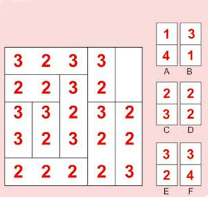
选择哪个模块放入图中空格内最符合逻辑呢？
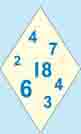
在这个菱形中画两条直线，使划分出来的四个板块内的数字总和都相等。
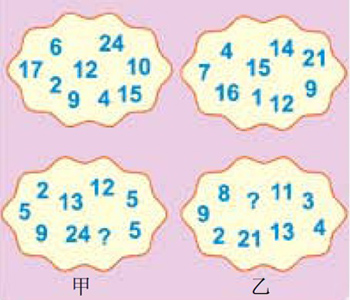
看看想想，问号处应填什么数字？
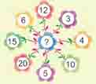
问号处应为哪个数字？
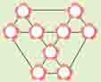
将1～9这九个数填入下图圆圈中，使得七个三角形（四个小等边三角形和三个大等边三角形）各自顶点上数字的和都相等。
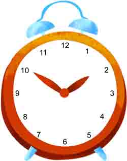
将一个钟的钟面切成你喜欢的任意六块，若要使每块切片中数字之和全部相等，应该怎么切呢？
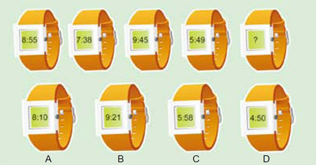
问号处应为几点？
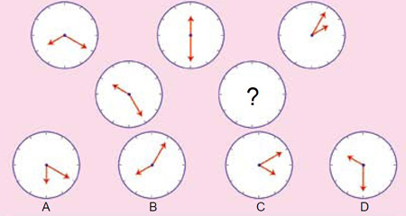
下面是一组玩具钟表的表盘图，请根据规律想想问号处应为哪个图？
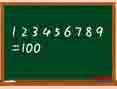
老师在黑板上连续写了九个数字：1 2 3 4 5 6 7 8 9。你能在这些数字中间添上三个运算符号，使算式的答案等于100吗？
| 描述 | 数字 |
| 找一个数，这个数的2倍是它的一半加上99。 | |
| 找一个数，这个数是它本身两位数相乘的积的2倍。 | |
| 找一个数，这个数的一半是它的三分之一加它本身两位数的和。 | |
| 找一个数，这个数本身的两位数前后颠倒过来则使它原来的数值增加五分之一。 |
下列数字都独具特色，它们都是两位数。根据描述，试试你能找来几个。
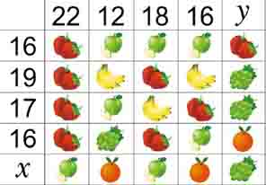
以下每种水果都对应一个价格，图中的数字表示该行和该列中水果对应价格的和，你能把未知的总价和算出来吗？
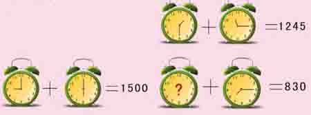
问号处应为几点？
把＋、－、×、÷、＝等数学运算符号填入下列数字中间，使之组成合理的等式。（注意：数字排列顺序不可改变）
（1） 2 7 6 3 8 1 9 0 4 5
（2） 2 9 0 1 4 5 6 3 7 8
（3） 6 7 2 0 5 4 1 9 3 8
1 2 3＝1
1 2 3 4＝1
1 2 3 4 5＝1
1 2 3 4 5 6＝1
1 2 3 4 5 6 7＝1
1 2 3 4 5 6 7 8＝1
1 2 3 4 5 6 7 8 9＝1
请你在不改变数字排列顺序的前提下，在每行中的各个数字之间加上算术运算符号或括号，使等式成立。（提示：若有必要，也可以把相邻的两个数字合并成两位数进行计算）
小马做事一向马马虎虎，你看他今天的作业，又把一个加数十位上的数字“5”错写成“3”，把另一个加数百位上的数字“6”错写成“9”，得到的计算结果是3217。
你知道这道算式的正确答案吗？
小青在纸上从1开始连续写数，1、2、3……一直写到279才停止。写完以后，想算下自己一共写了多少个数字，于是他就开始一个数字一个数字地数。旁边的小哲见他数得特别费劲，就说：“不用数就可以知道有多少个数字。”小青好奇地问：“你用什么方法知道有多少个数字？”小哲当即说出了方法，你知道小哲用的方法吗？
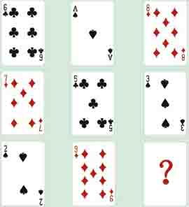
如果轮到你发第九张扑克牌，你会发哪张牌？
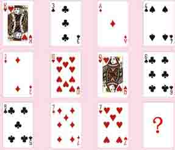
问号处应该放哪张牌？
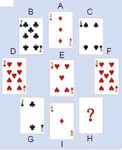
如图，这是一幅由九张扑克牌摆放成的图案，其中有一张牌被故意隐藏起来了，你能找出这个牌型的规律并猜到那张看不见的牌是什么牌吗？
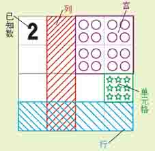
“数独”（Sudoku）一词源自日语，18世纪末，瑞士大数学家欧拉发明了这个游戏，后在美国发展，并在日本得以发扬光大。数独中的元素构成如上图所示，4×4数独的玩法规则是：每行，每列及每宫内填入1、2、3、4且不能重复。请以已经填入的数字为线索，参照以上规则，填写例图剩余空格中的数字。
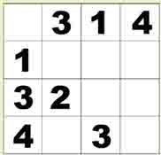
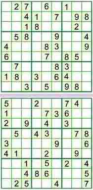
九宫数独是数独游戏中历史最悠久、流传最广的一种，主要有以下两点规则，看似简单，实则意义深远。
①每横行、竖列都有9个方格，在其中填入1～9中所有的数字。
②在3×3=9的小方格内，填入1～9中所有的数字。
请以已经填入的数字为线索，参照以上两点规则，填上剩余空格中的数字。
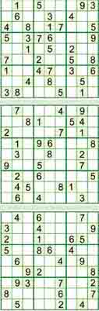
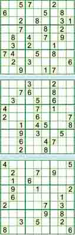
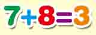
什么情况下下式成立？
请将0至9这十个自然数填入下面框中，使等式成立。（注意：要求十个自然数都要用到，且每个数字只能使用一次）
□×□÷□＋□－□＝□×□÷□＋□－□
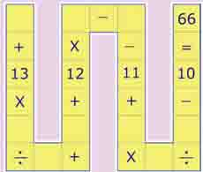
将数字1～9填入左图空格中，依次运算（不按等式写完后的四则运算规律），使等式成立。（注意：要求九个数字都要用到，且每个数字只能使用一次）
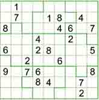
人的想象力是无穷的。在传统九宫数独的基础上，人们又发明了变形数独，右图即为其中一种。变形数独的解谜规则是：①每行、每列填入1～9中所有的数字。②宫不再是方形的了，但仍必须满足同一宫中不能有重复数字。
请以已填入的数字为线索，参照以上两点规则，填上剩余空格内的数字。
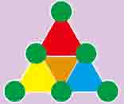
请在下面圆圈中，填入数字1～6，使满足：红、黄、蓝三角形三个顶点上的数字之和均为12且大三角形三条边上的数字之和均为9。
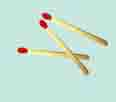
想一想，如何用三根火柴棒摆出一个大于3且小于4的数字？
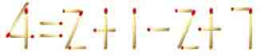
改变了哪一根火柴的位置，使原先成立的等式变成现在这样子的呢？请你试一试，把这个火柴等式还原。
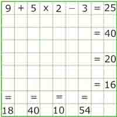
在第一行数字下面的空格里填写+、－、×、÷等运算符号，然后在符号下面的空格里面再填写上2、3、5、9中的一位数字……如此间隔出现，依次运算（注意：不按等式写完后的四则运算规律）。请完成这个“纵横等式”。
你能用三根火柴摆出两种“11”吗？请试试看！
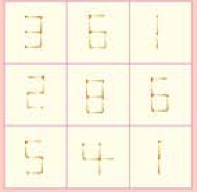
下面是一个由火柴棒组成的错误的方阵，你能只移动其中一根火柴的位置，使等式方阵成立吗？（提示：方阵中每一横行和竖列里的数字相加之和都相等）
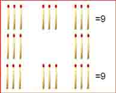
拿走四根火柴，将剩下的重新排列，使最上面一排、最下面一排、最左边一列和最右边一列的火柴数的总和均为9。
善于进行横向思维的人能找出多种方法，你能吗？
（1）如何只移动一根火柴，使下面的等式成立？
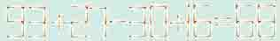
（2）如何只移动一根火柴，使下面的等式成立？
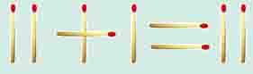
（3）如何拿走三根火柴，使下面的等式成立？
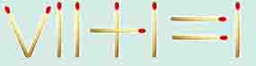
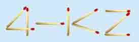
只移动一根火柴，使下面的错误的不定式成立，你能做到吗？
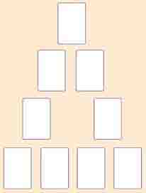
用红桃A～9这九张牌摆成如图所示的三角形，使得三角形每条边上的四张牌的点数之和均为21。
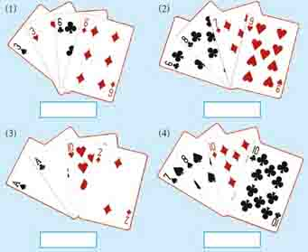
用扑克牌玩“速算24点”游戏在世界各国广泛流传。这种游戏可以四个人玩、两个人玩，甚至一个人也可以玩。最常见的一种玩法，是使用四种花色A～10共计四十张牌。无论几个人玩，都是每次出四张牌，利用加、减、乘、除四种运算符号，并允许使用括号将四张牌的四个点数不重不漏地使用一次，构造出一个表达式，使其结果等于24。
选择24这个数是有其道理的。因为从1～29这二十九个数中，唯独24有1、2、3、4、6、8、12、24共计八个约数，这样就使得四张牌的四个点数形成24的可能性大一些。
一般来讲，最快捷、最容易让人立刻想到的是乘法，如3×8、4×6、12×2等，其次是简单的加法如14+10、20+4、21+3等。这些方法是“速算24点”游戏中最简捷、最常用的方法。观察下列扑克牌组合，尝试一下上述方法，完成这组游戏。
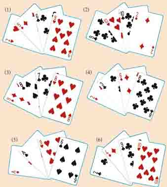
比“速算24点I”中列举的那些方法略微复杂一些的方法，是一些不容易被立刻想到的加法，如15+9（或19+5），16+8（或18+6）等。观察下列扑克牌组合，尝试一下上述方法，完成这组游戏。
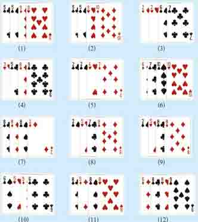
比前面所讲的“速算24点I”、“速算24点II”再复杂一些的方法，是一些需要略加思考才能想到的减法，如25-1、26-2、27-3、28-4、30-6、32-8、35-11、40-16、54-30、64-40、72-48等。观察下列扑克牌组合，尝试一下上述方法，完成这组游戏。
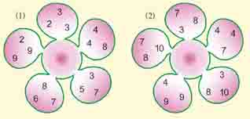
在梅花的花心处填入1～10中的一个数，使之能和周围花瓣中的三个数一起，用加减乘除四则运算算出24。
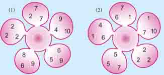
在梅花的花心处填入1～10中的一个数，使之能和周围花瓣中的三个数一起，用加、减、乘、除四则运算算出24。
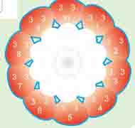
请在花心处填上1～10中的一个数，使之能和周围十片花瓣中的三个数一起，通过加、减、乘、除四则运算，计算出24。
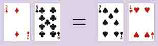
下面这个用扑克牌摆成的等式显然是错误的，你只能通过移动已有的四张扑克牌来纠正这个等式，不可以添加任何其他的数字符号。你能做到吗？
（1） 和 分别代表1～9中的一个整数，则 等于（ ）。
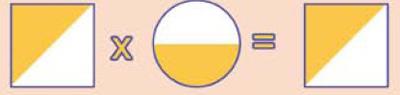
A.3 B.1 C.2 D.4 E.5
（2）□代表0～9中的一个数，○△代表10～99中的一个两位数，则□等于（ ）。
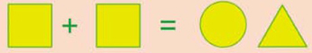
A.1 B.2 C.4 D.0 E.7
（3）△和○分别代表0～9中的一个数，则△等于（ ）。
A.3 B.7 C.0 D.4 E.2
（4）问号处应是什么图形？（ ）。
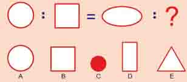
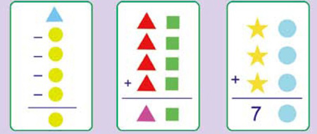
A.0 B.1 C.2 D.3 E.5 F.6 G.9
（1）△和○分别代表0～9中的一个数，则○等于（ ）。
（2）△□代表10～99中的一个两位数，则□等于（ ）。
（3）☆、○分别代表10～99中的一个数，7○分别代表70～79中的一个数，则☆、○分别等于（ ）。
羊和狼在一起时，狼要吃掉羊，所以关于羊和狼，我们规定一种运算，用符号△表示：羊△羊=羊；羊△狼=狼；狼△羊=狼；狼△狼=狼
以上运算的含义是：羊与羊在一起还是羊，狼与狼在一起还是狼，但是狼与羊在一起便只剩下狼了。
小朋友们总是希望羊能战胜狼，所以我们规定了另一种运算，用符号☆表示：
羊☆羊=羊；羊☆狼=羊；狼☆羊=羊；狼☆狼=狼
这个运算的含义是：羊与羊在一起还是羊，狼与狼在一起还是狼，但由于羊能战胜狼，当狼和羊在一起时，它便被羊赶走而只剩下羊了。
对羊或狼，可以用上面规定的运算作混合运算，混合运算的法则是从左到右，括号内先算，运算的结果或是羊，或是狼。请计算下式的结果：
羊△（狼☆羊）☆羊△（狼△狼）=
某茶楼的墙上有这样一道趣题：
茶可以清心也×2＝以清心也茶可
茶可以清心也×3＝可以清心也茶
茶可以清心也×4＝心也茶可以清
茶可以清心也×5＝也茶可以清心
茶可以清心也×6＝清心也茶可以
你知道“茶”、“可”、“以”、“清”、“心”、“也”这六个字各代表哪几个数字吗？
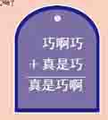
下面算式中，不同的汉字对应不同的数字。你能将此算式还原为数字算式吗？
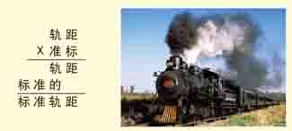
世界各国的火车轨距（两根钢轨之间的距离）不尽相同，有宽、窄、标准之分。我国采用的是标准轨距。如果用“标”、“准”、“轨”、“距”、“的”五个汉字代表五个自然数，组成一道文字乘法算式，你能推算出标准轨距是多少毫米吗？
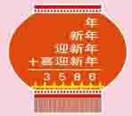
下图算式中相同的汉字代表相同的数字，不同的汉字代表不同的数字，写出用数字代替汉字的算式。
两个父亲给两个儿子零花钱，一个父亲给了自己的儿子150元，另一个父亲给了自己儿子100元。然而，两个儿子在数自己零花钱时，发现两人的钱加起来只有150元。这是为什么呢？
一辆卡车违反了交通规则，引发事故，司机畏罪驾车逃跑了。当时有三个人目击了这一车祸的发生，但都没有看清卡车的车牌号码，只注意到车牌号码的某些特征。
甲记得牌照前两个数字是相同的；乙记得车牌号码的后两个数字是相同的；丙是一位数学家，他说：“车牌号码肯定是四位数，并且这个四位数恰好是一个整数的平方。”根据这些线索，你能判断出正确的车牌号码吗？
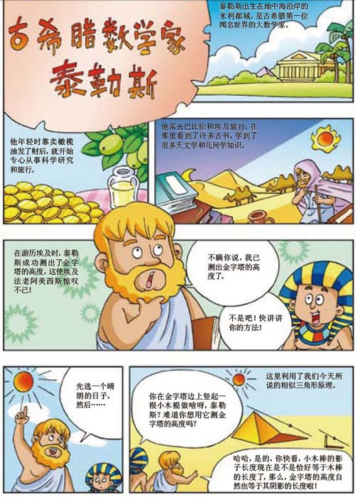
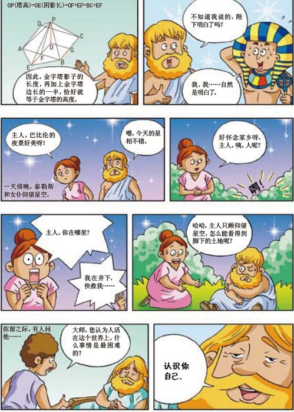
阿拉伯数字
大约在公元前三世纪，古印度人终于完成了数字符号1到9的发明创造，但当时并没有0。到了一千多年后的印度笈多王朝时期，人们开始用点表示0，后来改用圆圈。这套计数符号后来经阿拉伯人传至欧洲，欧洲人误认为是阿拉伯人发明的，所以称之为“阿拉伯数字”。
数学技法讲讲
数学是由概念、公理、定理、公式等按照一定逻辑规则组成的严密的知识体系，有很强的系统性，所以，在数学的学习中，一定要循序渐进，完整地、系统地掌握基本的概念和原理，这样才能为正确快速地解题打下坚实的基础。
小小数字意义大
有史以来，人们一直都认为数字，特别是特定的数字，具有特殊的含义。比如：
2是双数，人们在喜庆婚寿时送红包都是送双数的。
4因为与死同音成了禁忌，没人喜欢住在4楼，带4的电话号码也卖得便宜。
6是骰子上的最大点数，所以人们常说“六六大顺”。
7是一个颇为不吉利的数字。民间的葬礼习俗规定，自人过世后，每隔七天要进行一次祭祀仪式，称为“做七”，至“七七”四十九日除灵止。
8是一个人人都爱的数字，在粤语中，“八”与“发”相近，所以商人们对八特别敏感，像开业或签合同，都爱选在带“八”的日子。